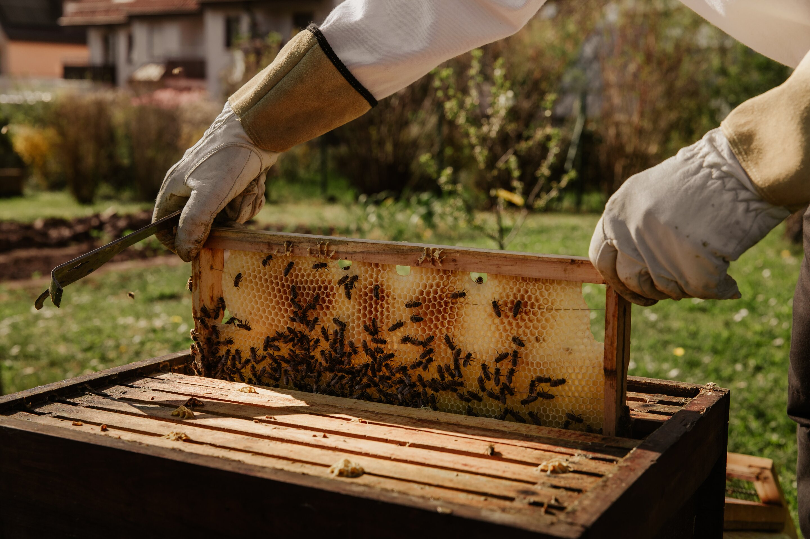

Η Ιστορία μας
Η εταιρεία μας ιδρύθηκε με σκοπό τη διατήρηση της παραδοσιακής παραγωγής μελιού με έμφαση στην ποιότητα και τη βιωσιμότητα, συνεργαζόμαστε με τοπικούς προμηθευτές και διατηρούμε στενή επαφή με την παράδοση και το περιβάλλον.
Η φιλοσοφία μας βασίζεται στην αφοσίωση και στην ποιότητα, στόχοι που αντικατοπτρίζονται σε κάθε στάδιο της παραγωγικής διαδικασίας καθώς παράγουμε πιστοποιημένα βιολογικά προϊόντα τα οποία είναι αγνά και ακατέργαστα από τη φύση έως το βάζο. Εφαρμόζουμε τους κανόνες άσκησης Βιολογικής Μελισσοκομίας τηρώντας το πλήρες νομοθετικό πλαίσιο κατά την παραγωγή Βιολογικών Μελισσοκομικών Προϊόντων και είμαστε ευαισθητοποιημένοι ως προς το περιβάλλον.
